Instalação de Sistemas Operacionais
Introdução
Existia uma época que sistemas operacionais eram feitos para máquinas específicas e era necessário um conhecimento relativamente profundo de TI para garantir o sucesso da instalação... Hoje em dia até o Linux tem uma excelente compatibilidade com grande parte do hardware para usuário final e pode ser instalado em menos de 30min sem quase nenhum conhecimento de informática.
Não é mais necessário pagar um técnico 50 reais para fazer uma simples instalação de sistema padrão (erroneamente conhecido pela turma como formatação), existem razões para pagar por uma instalação sim quando há limpeza, configuração e atualização de BIOS, verificação de HD e RAM... Mas sejamos sinceros, a grande maioria dos técnicos sequer sabe o que é isso.
Nos dias de hoje é mais seguro você mesmo baixar e instalar o seu sistema (ao invés pagar 50 reais para ter um sistema modificado por algum indiano mal intencionado instalado por alguém sem formação em TI), e esse "tutorial" te ensinará o básico do processo. A única coisa a se ficar atento é previamente fazer backup dos arquivos do HD em que você quer instalar o sistema, backup do pendrive que vai ser usado e alterar o processo de instalação entre BIOS ou UEFI.
Primeiro Passo: Baixar o Sistema
Obviamente o primeiro passo para se instalar um sistema é baixar a mídia de instalação do sistema para então passar para um pendrive e depois começar a instalação.
- Caso você queira instalar o Windows você pode encontrá-lo através desse link [Aqui].
- Caso você queira instalar o Linux Mint você pode encontrá-lo através desse link [Aqui].
- Caso você queira instalar o Manjaro Linux você pode encontrá-lo através desse link [Aqui].
- Caso você queira instalar o Arch Linux você pode encontrá-lo através desse link [Aqui].
- Caso você queira instalar o FreeBSD você pode encontrá-lo através desse link [Aqui].
- Caso você queira instalar o OpenBSD você pode encontrá-lo através desse link [Aqui].
- Caso você queira instalar o Batocera você pode encontrá-lo através desse link [Aqui].
- Caso você queira instalar o Haiku você pode encontrá-lo através desse link [Aqui].
BIOS ou UEFI?
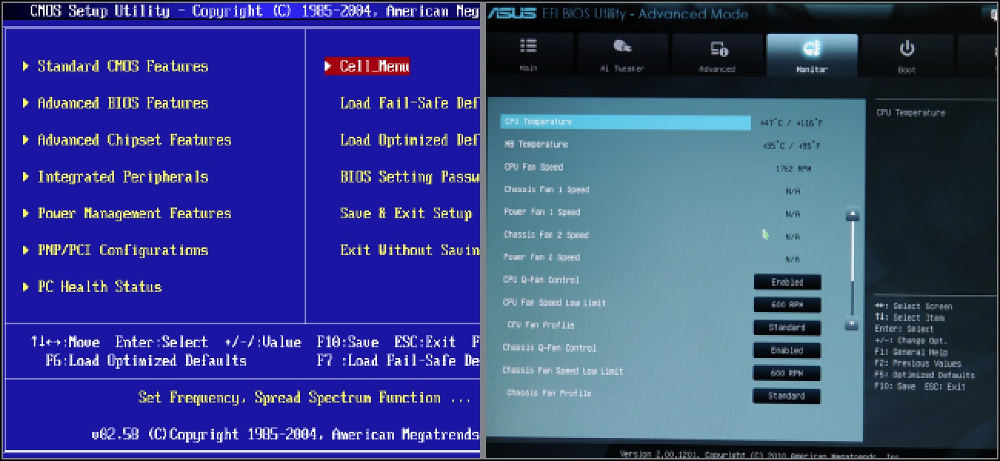
BIOS e UEFI são as interfaces para os computadores iniciarem o sistema operacional. A BIOS utiliza a tabela de partição do tipo Master Boot Record (MBR) enquanto UEFI utiliza GUID Partition Table (GPT), a BIOS é um sistema mais antigo e simples enquanto o UEFI é mais novo e oferece opções mais avançadas.
Hoje em dia o UEFI já subsitui a BIOS nos computadores mais modernos, podendo ainda oferecer suporte a sistemas mais antigos que foram feitos para funcionar com BIOS por meio do Compatibility Support Module (ou CSM). Caso seu computador utilize UEFI sempre dê preferência a instalar os sistemas em UEFI sem CSM ativo.
Não há uma regra absoluta para dizer se o seu computador utiliza BIOS ou UEFI e portanto isso deve ser verificado caso a caso (computadores mais novos por via de regra trabalham com UEFI). Para verificar se o seu sistema é UEFI você pode:
- Verificar o suporte na página do produto no site do Fabricante da sua placa mãe.
- Pelo próprio visual, a BIOS tende a ser mais simples e estática enquanto UEFI tende a ser mais gráfico.
- Acessar o SETUP da sua placa mãe (geralmente pressionando F2 ou Delete durante a inicialização do sistema) e verificar se na guia BOOT existe opção de seleção de modo UEFI (se suporta a utilização de mouse você está em UEFI).
FAÇA BACKUP DO CONTEÚDO DO PENDRIVE ANTES DE PROSSEGUIR
Gravação do pendrive com o balenaEtcher (para um único sistema)
Caso você queira apenas passar o sistema para o pendrive, instalar na máquina e tocar sua vida, utilize essa ferramenta.
Baixe o balenaEtcher [Aqui]
Selecione a versão para o seu sistema operacional e clique no botão de download:
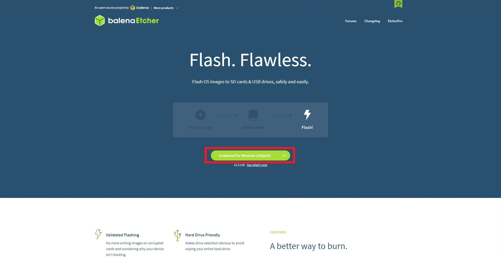
Selecione o arquivo de imagem do sistema (seja .iso ou .img) na opção "Flash from file":
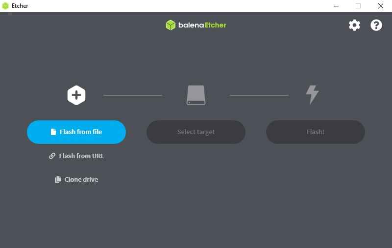
Vá para a seleção de dispositivos em "Select target":
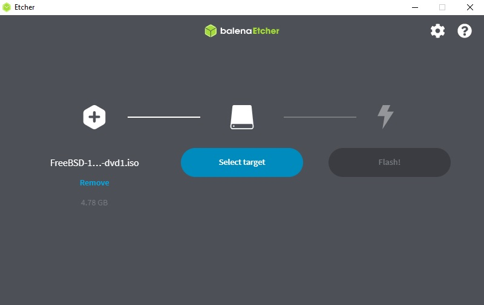
Selecione o seu pendrive em "Select target" e depois clique em "Select":
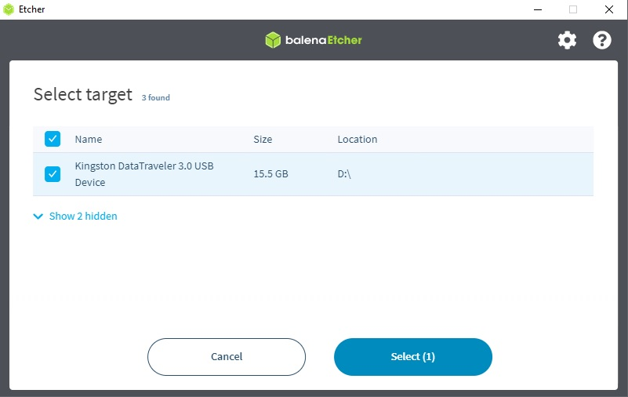
Gravação do Pendrive com o Ventoy (para multiplas imagens de sistema)
Caso você queira fazer um pendrive com suporte a particionamento e mais de 1 sistema por pendrive utilize essa opção.
Baixe o Ventoy [Aqui]
Selecione a guia "Downloads":
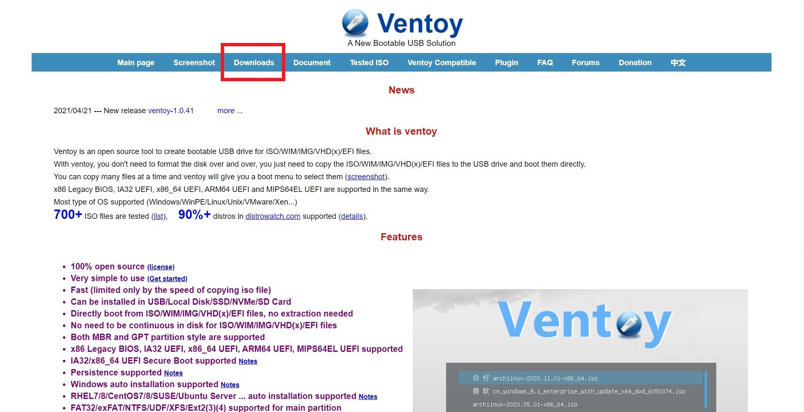
Selecione o executável para o seu sistema:
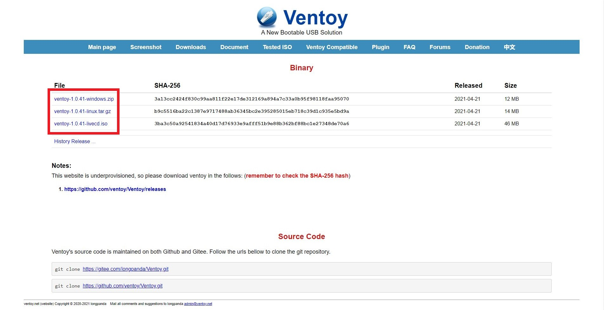
Selecione o dispositivo:
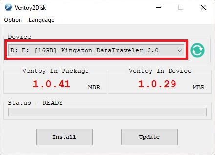
Selecione o tipo de tabela de partição (MBR para BIOS e GPT para UEFI):
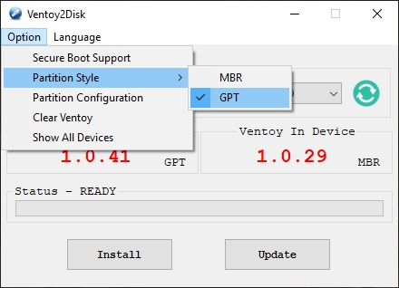
Selecione a opção de instalação:
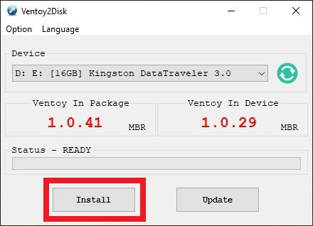
Ao fim da gravação basta mover os arquivos de imagem de sistema para o pendrive:
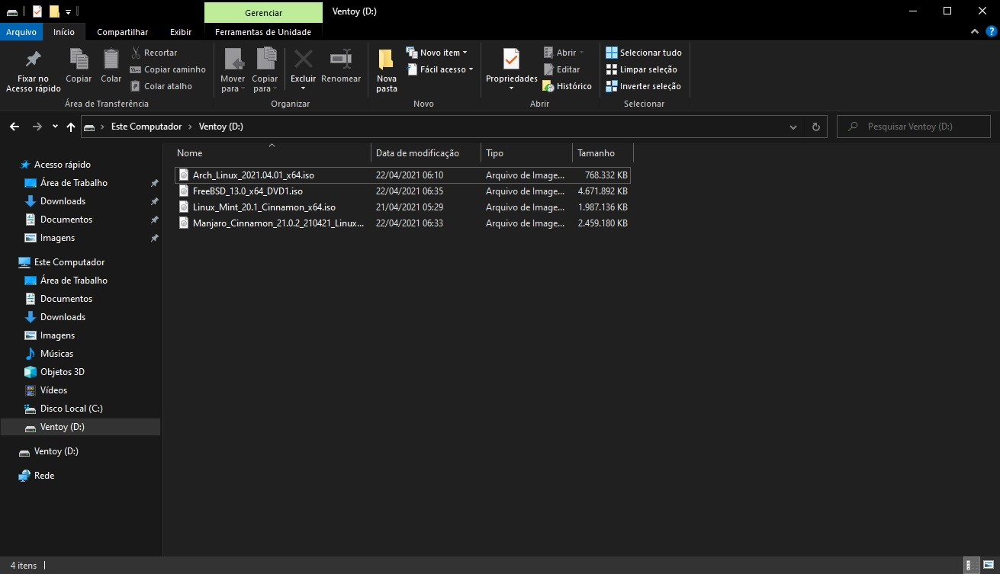
Selecionando o Dispositivo de BOOT
Durante a inicialização do computador aperte a tecla de acesso ao SETUP, geralmente F2 ou Delete (essa informação costuma aparecer na tela quando você liga o computador).

Na guia BOOT você encontrará alguma opção como "Select Boot Device", selecione o seu pendrive como dispositivo de inicialização, após isso vá na opção "Save and Restart" para reiniciar para a instalação.
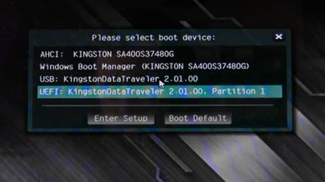
Se você fez tudo certinho seu computador vai reiniciar e já ir pro menu de instalação de sistema.
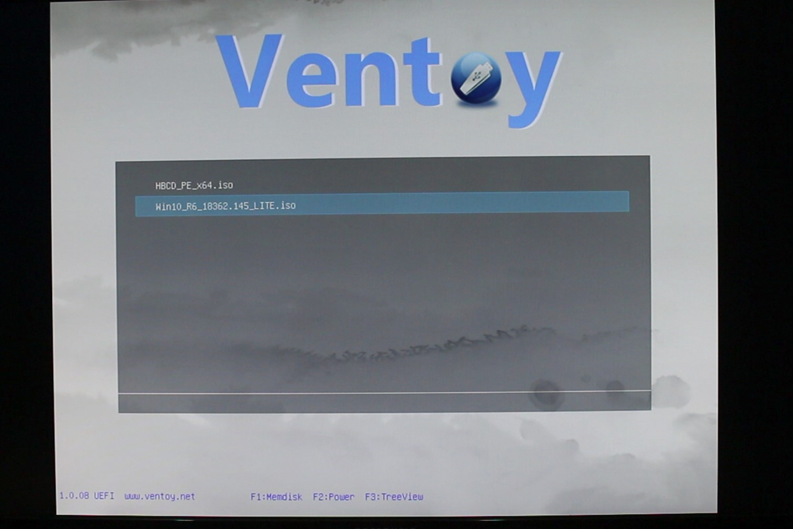
FIQUE ATENTO!
Algumas placas-mãe possuem uma seleção de dispositivos e uma outra seleção de prioridade dentre os dispositivos de inicialização, por exemplo:
- First Boot Device: Hard Drive
- HD Western Digital
- Kingston Pen Drive *
- Second Boot Device: CD-ROM
- Third Boot Device: PXE
Nesse caso você tem que especificar o tipo de dispositivo de inicialização para só então selecioná-lo como prioridade.
Não entendeu? Explico: Você disse para o sistema para iniciar pelo Hard Drive, mas você ainda precisa selecionar QUAL Hard Drive, nada demais.
Tá... Já passei o sistema para o pendrive... Mas como instalo?
- Caso você queira instalar o Windows você pode seguir esse tutorial [Aqui].
- Caso você queira instalar algum Linux baseado nos instaladores mais comuns (Mint, Manjaro, Ubuntu, etc) você pode seguir esse tutorial [Aqui].
- Caso você queira instalar o Arch Linux você pode seguir esse tutorial [Aqui].
- Caso você queira instalar o FreeBSD você pode seguir esse tutorial [Aqui].
- Caso você queira instalar o OpenBSD você pode seguir esse tutorial [Aqui].
- Caso você queira instalar o Batocera você pode seguir esse tutorial [Aqui].
- Caso você queira instalar o Haiku você pode seguir esse tutorial [Aqui].
E depois de instalar o sistema? O que eu instalo?
[Aqui] tem uma seleção de alternativas de softwares essenciais para você ficar bem situado com o seu sistema.